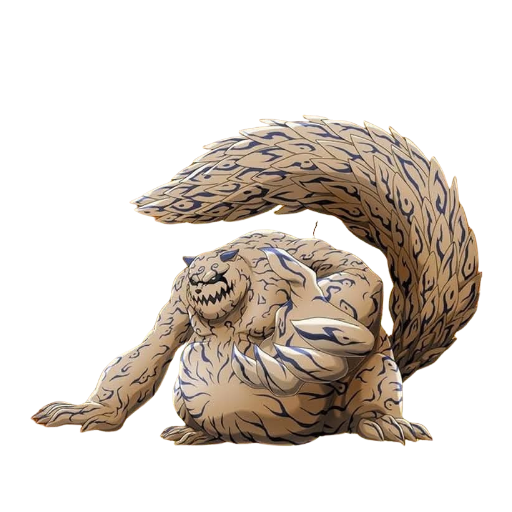
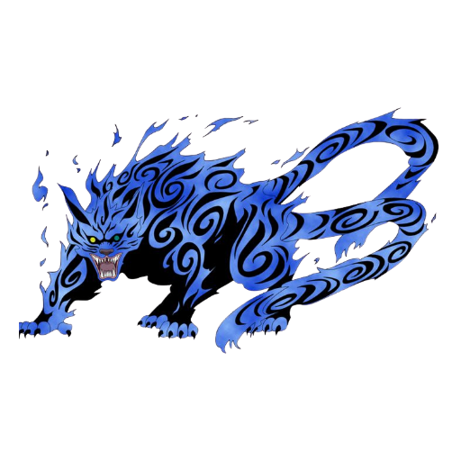
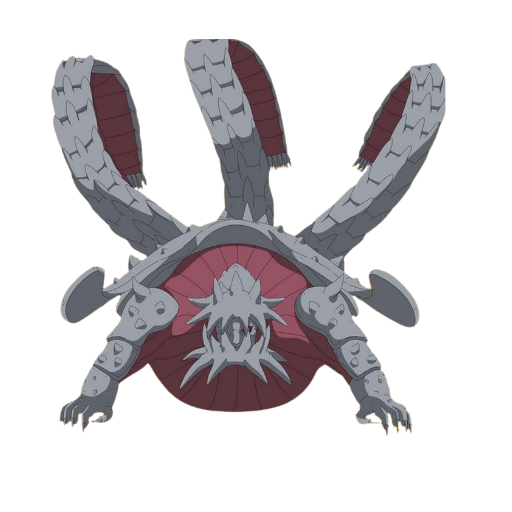
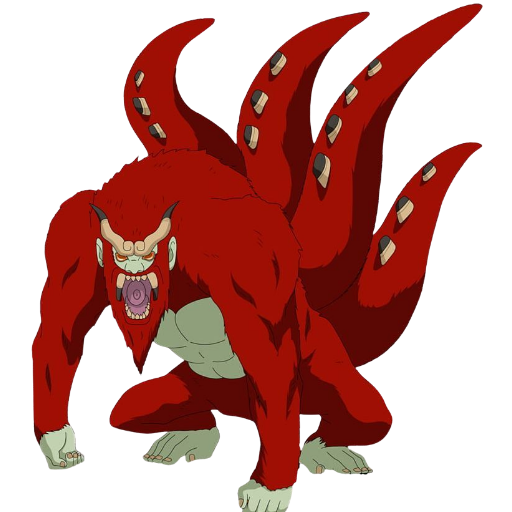
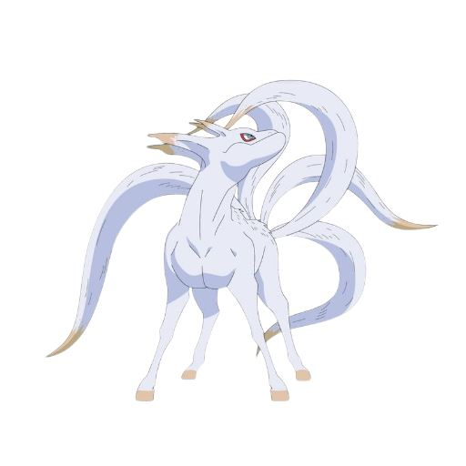
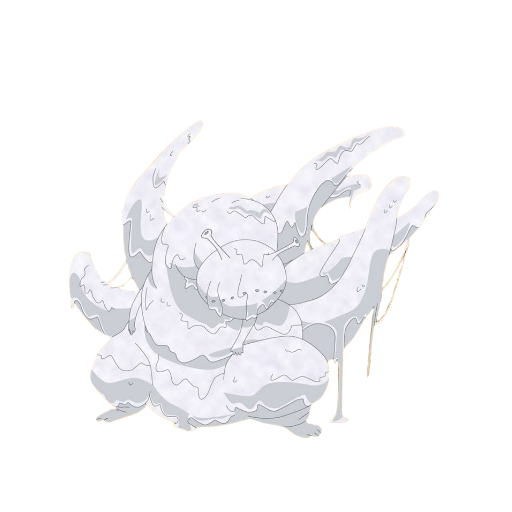
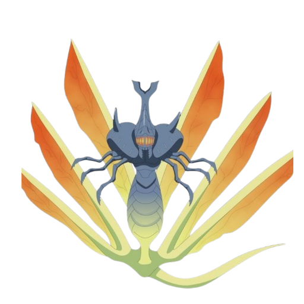
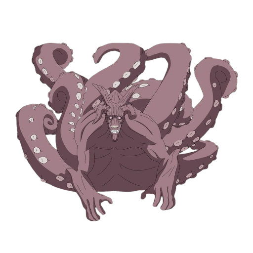
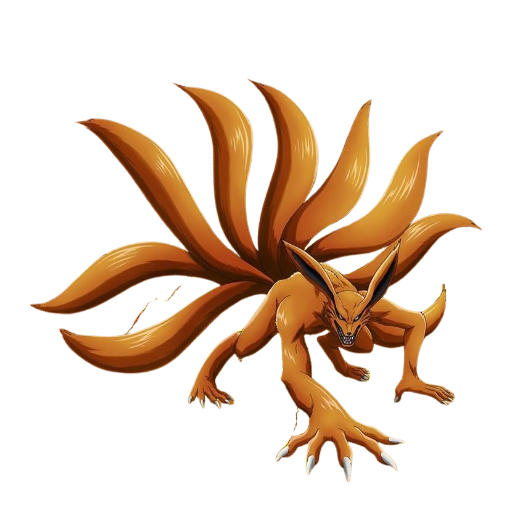

╔════ ≪ •❈• ≫ ════╗ Naruto New Legends ╚════ ≪ •❈• ≫ ════╝
Rpg Semi Textual
Status: Em divulgação
Apos a morte de naruto e companhia, muitos ficaram pensando em como seria daqui para frente, a familia deles foram dizimadas pelos Ōtsutsukis, nisso konohamaru e atualmente o nono hokage, mas por sorte ele ainda tem vivo o antigo sexto hokage e o Shikamaru nara, a quais sobreviveram sobre o ataque, ja que o alvo deles eram aqueles que tinham mais ligação a naruto e sasuke, e também boruto, Kawaki permanesse perdido pelo mundo, nao se sabe ao certo o paradeiro mas sera que nascerá aquele que um dia ira derrotar Kawaki, que tal voce vir a ser essa pessoa? Venha participar do Rpg de Naruto New Order, aonde os tempos irão mudar, talvez para melhores ou para piores vai de suas decisões.
Seja bem vindo ao Rpg de Naruto, o rpg ele e um tipo aonde contem a criação propria do personagem, pode seguir o caminho que quiser
Este espaço é dedicado ao coração mecânico da nossa jornada. Aqui, você encontrará todas as diretrizes fundamentais para a sua sobrevivência e evolução no mundo.
📜 Sistema de Aprendizado de Jutsus
A cada rank de jutsu, será necessário certa quantidade de palavras (sugiro baixar um aplicativo que conte) ou apenas entregue ao ADM que ele mesmo verá:
- Rank E: 250 Caracteres
- Rank D: 500 Caracteres
- Rank C: 1.000 Caracteres
- Rank B: 2.000 Caracteres
- Rank A: 3.000 Caracteres
- Rank S: 5.000 Caracteres
Para a criação do jutsu, você precisará ser jounnin e explicar o jutsu para um ADM, após ele entender, ele dirá o rank e a quantidade de palavras que você terá que fazer.
Cada player podendo aprender 1 jutsus por dia (exceto os prodígios) sendo que gennins podem aprender apenas jutsus de rank E, D e C sendo 1 por dia ainda (exceto um gennin prodígio, que pode aprender 1 A mais).
Descanso: Após aprenderem os jutsus de sua vontade, estes devem descansar. "Como assim?" A cada 2 jutsus aprendidos, são 1 hora de descanso.
𝐒𝐈𝐒𝐓𝐄𝐌𝐀 𝐃𝐄 𝐓𝐑𝐄𝐈𝐍𝐎𝐒
👤 Treino Solo
Limite: 3 por semana
Um treino de cena única, com no mínimo 400 Caracteres explicando o que você fez para ganhar tais pontos, como correr, levantar peso essas coisas!
🎁 Recompensa: 3.500 pontos
👥 Treino Duo
Limite: 2 por semana
Um treino com 2 pessoas, aonde acontece um combate amistoso, sendo proibido matar seu "rival", a batalha deve ter no mínimo 100 Caracteres e 5 cenas de cada.
- 5 cenas: 1.000 pontos
- 10 cenas: 2.000 pontos
👨👩👧👦 Treino Squad
Limite: 1 por semana
Um treino com no mínimo 4 pessoas, um combate, também amistoso que poderá ser feito da forma que vocês quiserem e deve ter no mínimo 5 cenas de cada tendo ambas 100 Caracteres!
🎁 Recompensa: 4.000 pontos
⚠️ OBSERVAÇÃO:
É Obrigatório usar a contagem de quantos treinos já fez de cada tipo, por exemplo: treino solo 2/3. Para não conter erros.
⏳ Treino por Hora (OFF)
O treino é baseado em tempo real. A cada hora off do grupo, você recebe 10 pontos:
*(Nome do seu pp) inicia um treino de x horas @ADM*
1h = 10 pontos. Proibido cenar durante o treino. Descanso: metade do tempo treinado.
🎯 Sistema de Missões
Para cada missão, temos um rank e quanto maior for o rank, maior é a quantia em recompensa. Siga as diretrizes abaixo:
🔴 Rank SS
🎁 25.000 Pontos | 💰 5.000 Ryos
Apenas Jounnins ou superiores. Obrigatoriamente narrada pelo ADM que criou.
🟠 Rank S
🎁 15.000 Pontos | 💰 2.000 Ryos
Feitas por todos (Chunnins ou inferiores devem estar com senseis). Narrada por um ADM que não esteja participando.
🟡 Rank A
🎁 9.000 Pontos | 💰 900 Ryos
Feitas por todos (Chunnins ou inferiores com senseis). Narrada por um ADM que não esteja participando.
🔵 Rank B
🎁 6.000 Pontos | 💰 500 Ryos
Feitas por todos em texto SOLO de no mínimo 500 palavras.
🟢 Rank C
🎁 4.000 Pontos | 💰 300 Ryos
Feitas por todos em texto SOLO de no mínimo 450 palavras.
⚪ Rank D
🎁 2.000 Pontos | 💰 150 Ryos
Feitas por todos em texto SOLO de no mínimo 200 palavras.
🔘 Rank E
🎁 1.000 Pontos | 💰 75 Ryos
Feitas por todos em texto SOLO de no mínimo 100 palavras.
⚠️ REGRAS DIÁRIAS:
Cada player pode realizar até 5 missões ao dia!
*Exceção aos que possuem a habilidade pessoal "Prodígio".
🧧 Sistema das Marcas
✨ Marca Da Maldição
(5k aprender (Jounnin) | 3k evoluir para Estágio 2)
Para aqueles que desejam ter, deverão pedir a um portador da habilidade da marca da maldição para te marcar, ele poderá pegar dois pontos seus quando bem entender mas apenas 2 por dia e para aqueles que aprendem (jounnin mínimo), não poderão usar em si mesmos.
⚠️ CORRERÃO O RISCO DE 50% DE MORRER
Será girado um dado de 20: caso caia -10 o receptáculo irá morrer, caso caia +10 ele será compatível e terá que descansar por 15 dias para acostumar o corpo.
- Primeira Forma: (4x) Velocidade, (4x) Agilidade, (4x) Força.
- Segunda Forma: (6x) Velocidade, (6x) Agilidade, (6x) Força e (2x) Chakra.
- Extra: Terá 1 dos elementos de quem te pôs a marca (somente com a marca ativa).
☁️ Marca Do Céu
(3k aprender (Jounnin) | 3k para transformação completa)
Este deverá pedir a um portador da habilidade para que o marque. Não tão forte como a da maldição, essa precisa apenas de 10 dias de repouso e nem terá chance de morte.
- Bônus Inicial: (2x) Velocidade, (2x) Força e (2x) Agilidade.
- Segunda Forma (Completa): (6x) Velocidade, (4x) Agilidade e (4x) Força.
🌍 Marca da Terra
(3k aprender (Jounnin))
Deverá pedir para um portador da habilidade para que o marque. Bem menos fraca, essa marca te faz ficar apenas 3 dias de repouso e te dá os seguintes bônus:
- Bônus: (2x) Velocidade, (2x) Força e (4x) Agilidade.
🐸 Modos Sennin (Sapos & Cobras)
🐍 Modo Sennin das Cobras
Requisitos: Invocação + Jounnin+ + 4.000 Ninjutsu + 8 dias OFF
Representa o tempo de aprendizado. Assim que tudo estiver feito o ninja terá:
- Força: (4x) - *Caso já tenha bônus, os valores se somam.*
- Agilidade e Velocidade: (8x)
- Taijutsu: (2x)
- Ninjutsu: (6x)
🐸 Modo Sennin dos Sapos
Requisitos: Invocação + Jounnin+ + 5.000 Ninjutsu + 7 dias OFF
Representa o tempo de aprendizado. Assim que tudo estiver feito o ninja terá:
- Força: (8x) - *Caso já tenha bônus, os valores se somam.*
- Agilidade e Velocidade: (4x)
- Taijutsu: (4x)
- Ninjutsu: (8x)
⚠️ REGRA DE ENERGIA NATURAL:
Por ser uma coisa que absorve energia natural e isso em excesso pode acabar matando, a pessoa poderá usar esse modo por 3 cenas, em seguida deverá carregar energia natural por 2 cenas. *(Se aplica a todos os modos)*
𝐒𝐈𝐒𝐓𝐄𝐌𝐀 𝐃𝐎𝐒(𝐀𝐒) 𝐁𝐈𝐉𝐔𝐒/𝐉𝐈𝐍𝐂𝐇𝐔𝐑𝐈𝐊𝐈𝐒
⛩️Shukaku 🦫
Transformação parcial: 4x em todos os atributos (1.000 palavras)
Manto de chakra Nível 1: 6x em todos os atributos (1.000 palavras)
Manto de chakra Nível 2: 8x em todos os atributos (1.000 palavras)
TRANSFORMAÇÃO COMPLETA: 10x Status
Despertar: 1.000 palavras | Aperfeiçoar: 1.500 palavras⛩️Matatabi 🐅
Manto de chakra Nível 1 (1 cauda): 6x em todos os atributos (1.000 palavras)
Manto de chakra Nível 2 (2 caudas): 10x em todos os atributos (2.000 palavras)
TRANSFORMAÇÃO COMPLETA: 15x Status
Despertar: 2.000 palavras | Aperfeiçoar: 2.500 palavras⛩️Isobu 🐢
Manto de chakra Nível 1: 1 cauda (8x) | 2 caudas (10x) - (1k/2k palavras)
Manto de chakra Nível 2 (3 caudas): 12x em todos os atributos (3.000 palavras)
TRANSFORMAÇÃO COMPLETA: 20x Status
Despertar: 3.000 palavras | Aperfeiçoar: 3.500 palavras⛩️Son Goku 🐒
Manto Nível 1: 1 cauda (8x) | 2 caudas (10x)
Manto Nível 2: 3 caudas (12x) | 4 caudas (14x)
TRANSFORMAÇÃO COMPLETA: 25x Status
Despertar: 4.000 palavras | Aperfeiçoar: 4.500 palavras⛩️Kokuō 🐎
Manto Nível 1: 1 cauda (10x) | 2 caudas (12x) | 3 caudas (14x)
Manto Nível 2: 4 caudas (16x) | 5 caudas (18x)
TRANSFORMAÇÃO COMPLETA: 30x Status
Despertar: 5.000 palavras | Aperfeiçoar: 5.500 palavras⛩️Saiken 🐌
Manto Nível 1: 1 a 4 caudas (8x, 10x, 12x, 14x)
Manto Nível 2: 5 caudas (18x) | 6 caudas azul (20x)
TRANSFORMAÇÃO COMPLETA: 35x Status
Despertar: 6.000 palavras | Aperfeiçoar: 6.500 palavras⛩️Choumei 🐝
Manto N1: 1 a 4 caudas (8x até 14x)
Manto N2: 5 caudas (16x) | 6 caudas (20x) | 7 caudas (22x)
TRANSFORMAÇÃO COMPLETA: 40x Status
Despertar: 7.000 palavras | Aperfeiçoar: 7.500 palavras⛩️Gyūki 🐙
Manto N1: 1 a 4 caudas (8x até 14x)
Manto N2: 5 a 8 caudas (18x, 20x, 22x, 24x)
TRANSFORMAÇÃO COMPLETA: 45x Status
Despertar: 8.000 palavras | Aperfeiçoar: 8.500 palavras⛩️Kurama 🦊
Manto N1: 1 a 4 caudas (8x até 14x)
Manto N2: 5 a 9 caudas (16x até 26x)
TRANSFORMAÇÃO COMPLETA: 50x Status
Despertar: 9.000 palavras | Aperfeiçoar: 9.500 palavras❌ Juubi: Bloqueada
📝 CRIAÇÃO DE PERSONAGEM
📊 Entendendo os Atributos
Taijutsu: É o atributo bruto para o físico. Força, velocidade e agilidade são derivados dele.
Força: Dano físico sem armas. Para causar dano total, a diferença deve passar de 30% da resistência do alvo.
Velocidade: Movimento. Para superar alguém, você deve ser 25% mais rápido.
Agilidade: Esquiva. Deve ser 25% superior ao ataque adversário (físico ou chakra).
Resistência: Defesa contra Nin, Ken ou Tai. Se for maior que a diferença de dano, você não recebe dano.
Kenjutsu: Uso de armas. Soma 20% da Força no golpe e define a velocidade com Kunais/Shurikens.
Ninjutsu: Define o dano, velocidade e resistência dos seus Jutsus (especialmente Doton/Mokuton).
Genjutsu: Dano e escape. Se a diferença defensiva for menor que 20%, você é pego pela ilusão.
🍂 Habilidade Pessoal 🍂
📜 Modelo de Ficha
Preencha os campos abaixo e envie no grupo de aprovação:
⛩️ CLÃS DO MUNDO NINJA ⛩️

Clã Aburame
Especialidade com controle de insetos e uma grande reserva de chakra tendo (2x) em chakra (inicialmente controla uma grande quantidade de insetos, sugadores inclusive sendo essa quantidade 50 Insetos.)

Clã Akimichi
Em posse da técnica de expansão corporal já no início tendo assim 20 de força iniciais e posse de pílulas que ajudam a melhorar, regenerar lentamente porém totalmente (pílulas ilimitadas mas apenas Akimichis podem usar)

Clã Hyūga
Despertarão o Byakugan De Acordo com a forma que foi Imposta No sistema do clã. Fora uma boa destreza em Taijutsu tendo assim (2x) em Taijutsu e (2x) em Ninjutsu Aonde Seu estilo de luta e focado mais em Nintaijutsu.

Clã Nara
Desde já tem em posse a técnica de processão das sombras porém em menor força e alcançando uma menor distância, teem uma boa quantidade de chakra tendo (2x) em chakra e uma floresta a qual apenas eles podem entrar, qualquer outro que entrar ali este Nara poderá saber de tudo que acontece com o "invasor" já que seus veados estarão sempre os observando, podendo sair mais facilmente de um genjutsu fraco de rank até C

Clã Sarutobi
Aptidão em aprender qualquer elemento de chakra e jutsu elemental, começando com 3 elementos iniciais, uma invocação (será sorteado) Além de Ter uma Afinidade em Ninjutsu (3x)

Clã Senju
Grande reservatório de chakra tendo (4x) em chakra Caso Venha a ter mokuton, sem o Mokuton Irão Receber (2x) em chakra e uma chance de 50%(sorteio) de despertar Mokuton junto ao modo sennin (como o do hashirama) podendo usar o modo sennin ao se tornar jounnin

Clã Uchiha
Tendo maior parentesco com katon assim já tendo katon como elemento, podendo escolher mais um, e tendo maestria com espadas (2x) em kenjutsu.

Clã Uzumaki
Aptidão em selos assim podendo fazer selos com apenas 1 selo (apenas quando se tornar jounnin você vai ter essa aptidão) e uma reserva maior de chakra (4x) em Chakra, assim podendo usar até dois ataques por vez e também uma Resistência maior que o normal tendo (4x) em Resistencia

Clã Yamanaka
Facilidade em aprender jutsus de controle mental como está é uma das poucas habilidades já começa com o jutsu de possessão mental mesmo sendo gennin o alvo deverá ter menos de 10% de força e 15% de Resistência para ser pego e você terá 2 minutos apartir do momento que tomar a mente do alvo, podendo assim aprender jutsus de controle mental do rank acima Yamanakas não possuem jutsus elementais por tanto você receberá (2x) em força, (2x) em Genjutsu e (2x) em Ninjutsu
Clã Hatake
Estes começam com a invocação de cães, podendo invocar um a mais a cada patente que sobe, começando com 1, tendo (2x) em agilidade e são ótimos rastreadores, os 3 primeiros a entrar terão "O Sabre de Chakra Da Luz Branca", uma espada em menor escala que deixa um rastro branco ao ser mexida, aqueles que são Membros desse clã vem com a Habilidade Prodígio.
Clã Hōzuki
Estes tem a habilidade de transformar seus corpos em líquido, sendo gennin apenas membros por vez e quando se tornar jounnin o corpo todo Tendo (2x) em Ninjutsu.

Clã Inuzuka
Estes ganharão um Ninken (cão), também sendo ótimos rastreadores seja lá por olfato, audição e em certos momentos paladar, Suas capacidades físicas sao mais elevadas do que a maioria dos ninjas comuns tendo assim (2x) em Taijutsu.
Clã Kurama
Clã Conhecido por ter alta aptidão em Genjutsu, tendo assim (2x) em Genjutsu e quando se tornar jounnin poderá prender inimigos com menos de 10% em Genjutsu, porém, este genjutsu poderá causar danos físicos a quem for pego

Clã Yuki
Estes tem a Kenkei Genkai de gelo, podendo aprender jutsus de gelo e tendo (2x) em kenjutsu, Aonde o clã irá começar com Fuuton e Suiton, elementos Compostos Pela Kekkei Genkai

Clã Lee
Estes podem aprender a abrir os portões e ensinar também, tendo assim (4x) em taijutsu, (2x) em Agilidade
Clã Namikaze
Este clã não tem muito beneficio porem eles tem maior afinidade com selos assim reduzindo o gasto de selos para jutsus em - 1 selo e tendo também maestria em ninjutsu (2x em Ninjutsu) e também todos sendo muito rápidos (2x em velocidade).

Clã Sabaku
O Clã do Gaara... eles são bastante resistentes e com um controle de chakra incrível! Alguns deles conseguem ter a kekkei genkai da areia... ou até mesmo ter uma variante poderosa dela. Buffs: (3x) Em resistência e (3x) em Ninjutsu, Sorteio para ver se terá o controle de areia, ou até mesmo areia de metal ou de ouro... (No início só poderá controlar pouquíssima areia... mas com o decorrer do tempo você aumenta o tanto de areia que consegue controlar.)

Clã Chinoike
Um clã raro que tem bastante habilidades com ninjutsu do elemento sangue e bastante experientes com genjutsus, é um clã sinistro mas poderoso... Buffs: (2x) em Ninjutsu e (2x) em genjutsu... além de obter a habilidade ocular que pode fazer genjutsus únicos... e tem o elemento do sangue... Obs: controle de sangue baixo no início mas aumenta com o passar do tempo...
👑 SISTEMA DE LÍDERES DE CLÃ
Objetivo
O objetivo deste sistema é permitir que os jogadores criem, gerenciem e participem de clãs dentro do universo de Naruto Shippuden. Os clãs são grupos de ninjas que compartilham um laço de sangue, uma habilidade especial ou uma filosofia comum. Os clãs podem ter diferentes graus de influência, poder e prestígio no mundo ninja, e podem se aliar ou se opor a outras forças.
Criação de Clã
Para criar um clã, o jogador deve cumprir os seguintes requisitos:
- • Ser um nível Jounnin.
- • Ter um nome, um símbolo e uma história para o seu clã.
- • Ter pelo menos 5 membros fundadores, que devem ser jogadores ativos e concordar em fazer parte do clã.
- • Pagar uma taxa de ryous para registrar o clã na sede da aliança ninja.
Ao criar um clã, o jogador se torna o líder do clã, e pode definir as regras (claro que ambos devem entrar em um consenso com os adm's gerais), os objetivos e as responsabilidades dos membros. O líder do clã também pode recrutar novos membros, expulsar membros indesejados, formar alianças ou rivalidades com outros clãs, e declarar guerra ou paz.
Gerenciamento de Clã
O líder do clã pode delegar algumas de suas funções para outros membros, criando cargos dentro do clã. Os cargos podem ter diferentes níveis de autoridade, privilégios e deveres, dependendo da vontade do líder. Por exemplo, o líder pode nomear um conselheiro, um médico, um capitão, um espião, etc.
O líder do clã também pode criar missões para os membros do clã, que podem ser de diferentes tipos, como coletar recursos, explorar territórios, combater inimigos, proteger aliados, etc. As missões podem ter diferentes níveis de dificuldade, recompensa e urgência, dependendo da situação do clã. As missões podem ser individuais ou coletivas, e podem exigir a cooperação ou a competição entre os membros. O líder do clã pode acessar um painel de controle, onde pode ver as informações sobre o seu clã.
Diplomacia, Alianças e Desafios
• Diplomacia: Para obter acordos entre os clãs, você pode criar um sistema de diplomacia, onde os líderes dos clãs podem enviar mensagens, propostas e ofertas uns aos outros. Por exemplo, um clã pode oferecer recursos, informações, proteção ou apoio em troca de algo que o outro clã possa oferecer. Os acordos podem ser temporários ou permanentes, e podem ser quebrados se uma das partes não cumprir com o que foi combinado.
• Alianças: Para formar alianças, você pode criar um sistema de reputação, onde os clãs podem ganhar ou perder pontos de reputação de acordo com as suas ações. Por exemplo, um clã pode ganhar reputação se ajudar outro clã em uma missão, ou perder reputação se atacar outro clã sem motivo. Os clãs com alta reputação podem formar alianças com outros clãs de alta reputação, e os clãs com baixa reputação podem ser alvo de hostilidade ou desprezo. As alianças podem trazer benefícios mútuos, como acesso a territórios, recursos, informações ou missões exclusivas.
• Desafio: Para disputar entre os líderes de clãs, você pode criar um sistema de desafio, onde os líderes dos clãs podem desafiar uns aos outros para um duelo, uma competição ou uma prova de habilidade. Por exemplo, um líder pode desafiar outro líder para um combate um contra um, uma corrida de obstáculos ou um teste de conhecimento. Os desafios podem ter diferentes regras, condições e apostas, dependendo da vontade dos líderes. Os desafios podem ser uma forma de resolver conflitos, demonstrar superioridade ou simplesmente se divertir.
⚠️ Caso Entre os Membros dos Clãs se candidatar e alguém não concordar, uma luta irá ocorrer entre ambos, assim tendo a maioria dos votos ele é Nomeado o Líder do Clã.